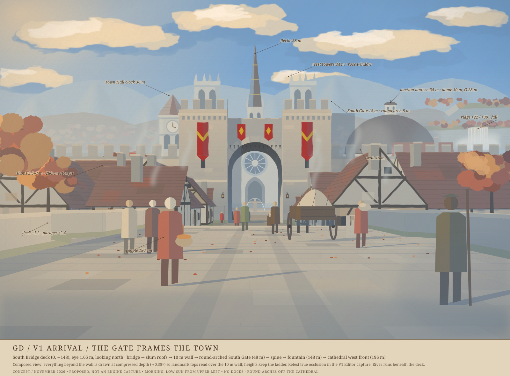
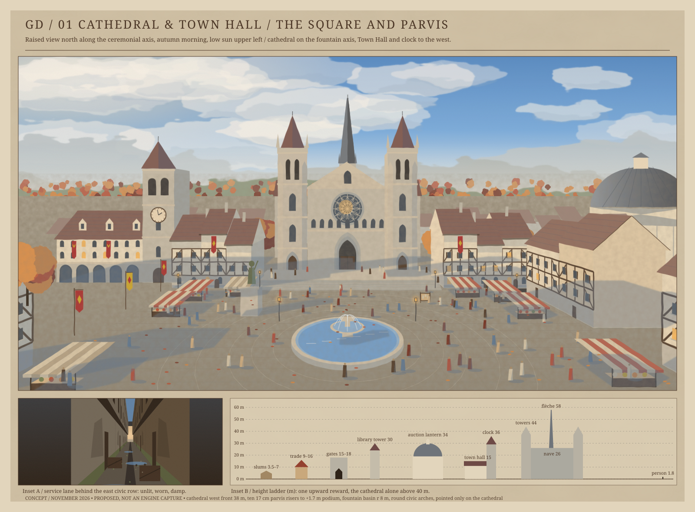
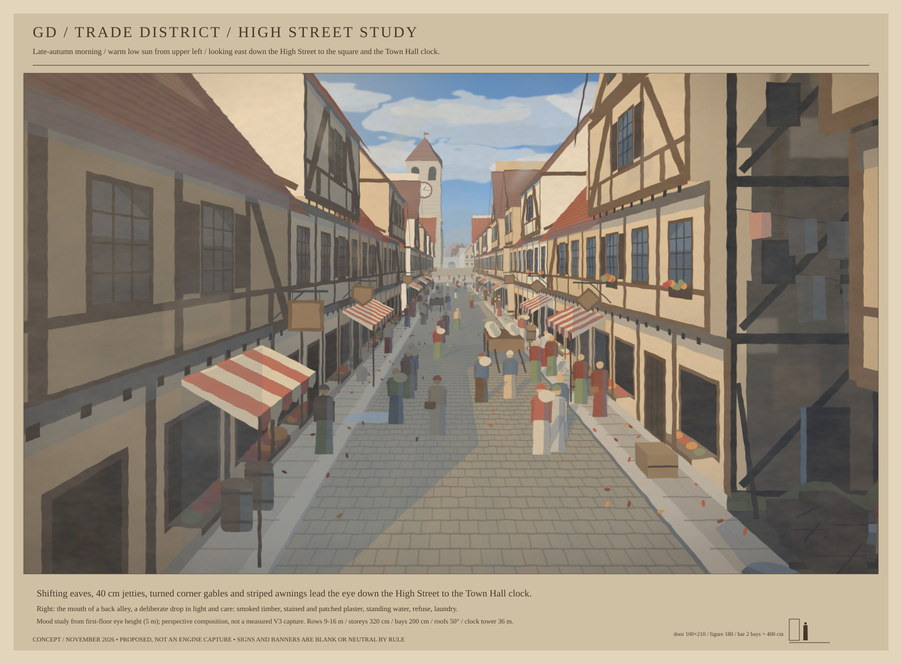
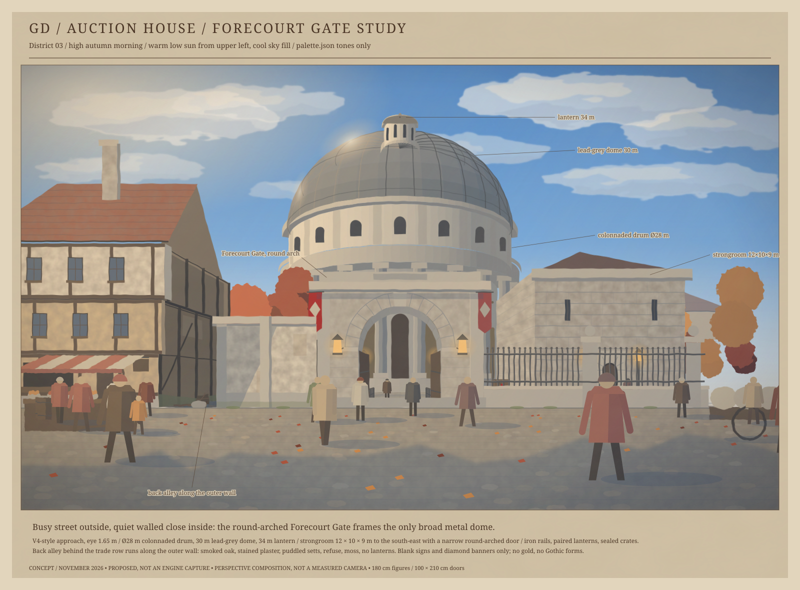
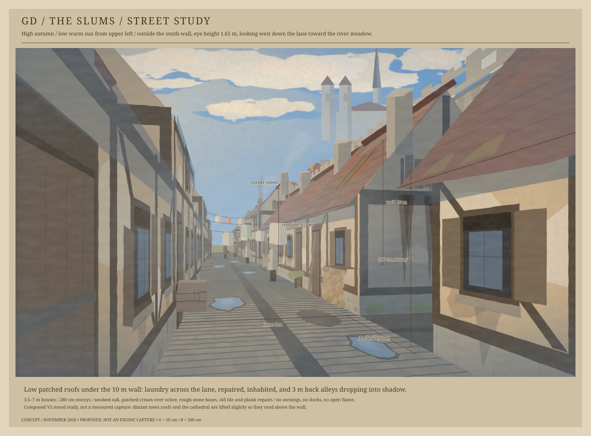

Overview

01 / Whole city
The walled town on Revision C: 37 blocks and 300 street buildings, slums outside the south wall, river and bridges, and the ridge with its waterfall. Open full size

02 / Gate approach
Composed V1 view from the South Bridge deck; depth beyond the wall is compressed so the landmark tops read, with the river beneath the deck. Open full size
Districts

03 / Cathedral & Town Hall
The height ladder is civic power, not a second competing spire. Open full size

04 / Trade District
Deep awnings, jetties and sign silhouettes turn a long street into a busy room; a back alley drops away to the right. Open full size

05 / Auction House
A quiet, gated forecourt frames the only broad metal dome. Open full size

06 / The Slums
Low patched roofs under the wall: laundry, repair and an inhabited lane, with back alleys dropping into shadow. Open full size

07 / Library
A walled, buttressed close; round-headed windows keep Gothic detail exclusive to the cathedral. Open full size
Production sheets

08 / Building catalogue
36 functional types as front elevations at labelled scale, each with a 180 cm figure and a 200 cm bay tick, plus a back-alley strip and the height ladder. Open full size

09 / Modular kit
50 kit pieces with envelopes in centimetres and G units, plus worn back-alley variants, composite props, decals and landscape pieces. Open full size